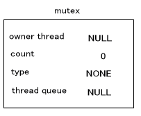

mutex (ミューテック または ミューテックス、mutual exclusion (service) ) は、スレッド間の排他制御のための機構です。プログラムの特定の個所について複数のスレッドからの同時実行を抑制し、データやレジスタなどのリソースが同時に複数のスレッドからアクセスされないようにします。
mutex の初期化は OS_InitMutex() で行ないます。 1つの OSMutex 構造体のオブジェクトに1つの mutex を設定することが出来ます。
OSMutex 構造体は、
struct OSMutex
{
OSThreadQueue queue;
OSThread* thread; // the current owner
s32 count; // lock count (notice: use upper 1byte as mutex type)
OSMutex* prev; // link for OSThread.queueMutex
OSMutex* next; // link for OSThread.queueMutex
};
|
となっています。このうち、prev と next は mutex をリスト構造で管理するためのメンバで、実質的に
mutex の同期機能を構成するものは queue と thread と count です。
queue は、この mutex によって待たされているスレッドが登録されるスレッドキューです。
thread は、この mutex で他のスレッドをブロックしているカレントスレッドを登録するメンバです。
count は、この mutex に対するロックのネストを管理するメンバです。ロックの回数をカウントします。ただし、最上位 1 バイトは mutex のタイプを表すのに使用します。従ってカウンタ値として実際に使用できるのは 24 ビット分となります。タイプを表すメンバを別に設定せず count に含めているのは、以前のバージョンで使用された mutex と互換を取るためです。 ( 注 ： カウント値の上限に関しては速度を重視するためにチェックを行っていません。一つの mutex を 24ビット分=約1677万段もネストすることはまずありえないと思われます。)
mutex のタイプについては次の「mutex のタイプ」を参照してください。
mutex のタイプは STD, R, W があります。(ヘッダでは OS_MUTEX_TYPE_STD などと定義していますが、以下の説明では解かりやすいように STD のように記します。) まだ決定されていない場合を NONE と表します。
通常のスレッド同期に使用するのは STD のタイプの mutex です。これは異なるスレッドの進入は無条件に許可しません。
R と W のタイプのものは read / write lock と呼ばれる mutex です。
R タイプの read lock mutex は、他のスレッドが write lock (や通常の mutex ロックを) することは許可しませんが、read lock することは許可するというものです。 これはデータの読込みを行う場面で使用することが出来ます。データの読込みは複数のスレッドから行っても問題はないですが、そこに書きこみが入ると整合性が取れなくなるからです。
W タイプの write lock mutex は異なるスレッドデータの書きこみを行う場面で使用することが出来ます。書きこみは複数のスレッドから行うことは出来ませんし、書き込んでいる途中で他のスレッドから読込むことも許可することは出来ません。従って、W タイプの mutex はロックのポリシーに関しては STD の mutex と同等と言えます。( こちらには read lock と write lock を移行させる関数などがありますので、全く同じであるというわけではありません)
R タイプ と W タイプの mutex は、そのmutex があるスレッドから一段だけロックされている場合に限り、R から W、または W から R へタイプを変更することが可能です。例えば以下のように、データを書き込んだ後、ロックを解放せずに読込みを行う(このときは他のスレッドからの読込みも許可する) にすぐに移行するような場合に使用します。
OSMutex mutex;
OS_InitMutex( &mutex );
void write_and_read()
{
OS_LockMutexW( &mutex ); ← write lock
writeData();
OS_LockMutexFromWToR( &mutex ); ← write lock から read lock へ
readData();
OS_UnlockMutexR(); ← read lock として unlock する
}
void read()
{
OS_LockMutexR( &mutex );
readData();
OS_UnlockMutexR( &mutex );
}
thread1()
{
write_and_read();
}
thread2()
{
read();
}
初期化の終わった mutex に対する操作としては
・ロックする ( Lock 関数 )
OS_LockMutex(), OS_LockMutexR(), OS_LockMutexW()
・アンロックする ( Unlock 関数 )
OS_UnlockMutex(), OS_UnlockMutexR(), OS_UnlockMutexW(), OS_UnlockMutexRW()
・ロックを試みる ( TryLock 関数 )
OS_TryLockMutex(), OS_TryLockMutexR(), OS_TryLockMutexW()
があります。
mutex をロックをすると、同じ mutex に対しては別のスレッドからのロックでスレッドをブロックするようになります。ただし read lock 同士ではブロックしません。 ブロックされたスレッドは、mutex がアンロックされるまでそこで待たされます。
ロックする関数 ( Lock 関数 )は、ロックを完了するまでそこで待たされますが、ロックを試みる関数( TryLock 関数 )では、ロック出来ても出来なくてもすぐに戻ります。成否は戻り値で知ることが出来ます。
read / write lock の mutex に対しては、
・mutex のタイプを変更する
OS_LockMutexFromRToW(), OS_LockMutexFromWToR()
・mutex のタイプの変更を試みる
OS_TryLockMutexFromRToW(), OS_TryLockMutexFromWToR()
が用意されています。
ここからは mutex ロックを行うときの内部動作について説明します。
OS_InitMutex() で Mutex を初期化したとき、OSMutex の スレッド所有者、カウンタ値、スレッドタイプ、スレッドキューは以下の値になっています。( OSMutex の count メンバはカウンタ値とmutex のタイプと2つの情報を含んでいるので、以下の図では count と type に分けました。)

ここでは read/write lock でない、通常の mutex による ロックで説明を行います。
プログラムのある個所に OS_LockMutex() を記述すると、指定したmutex がその時点でロックに使用されていない場合、カレントスレッドを記憶してロックをかけます。
すでにロックされている mutex を指定した OS_LockMutex() が実行されると、mutex が現在のスレッドと同じスレッドによってロックされている場合は
mutex の count をインクリメントした上で関数から戻り、異なるスレッドであった場合はロックが解除されるまで現在のスレッドは一時停止状態になります。このときスレッドのリスケジューリングが発生します。
例えば、下図のように Mutex1 と、それを使ってロックをかけるプログラムがある場合を考えます。
このプログラムを thread1 が実行しようとします。thread1 は mutex のロック関数
OS_LockMutex( &Mutex1 ) を実行しますが、Mutex1 はこの時点でまだ使われていないので ( 使われていないという判断は
Mutex1 の owner thread が NULL であることを利用しています。)、 thread1
が Mutex1 の owner thread であることを記憶し、count を 1 にしてロック関数から戻ります。
ここで別のスレッド thread2 が同じプログラムを実行しようとした場合を考えます。thread2
も OS_LockMutex( &Mutex1 ) を実行しますが、Mutex1 はすでにロックに使用されています。Mutex1 の owner
thread は thread2 ではないので thread2 はここから先に進むことが出来ません。結果、thread2
は一時停止状態に入ります。この時、Mutex1 内の thread queue にこのロックの解除を待っているスレッドとして、
thread2 を登録しておきます。
一方、therad1 が再びどこかの(同じ行であっても、別の行であっても) OS_LockMutex( &Mutex1 ) を実行する場合を考えます。Mutex1 はすでにロックに使用されていますが Mutex1 の
owner thread は現在のスレッド thread1 と等しいので、そのまま通過することが出来ます。この時
Mutex1 内の count をインクリメントします。
なお、複数のスレッドが一つの mutex の thread queue に登録されることもあります。これらはすべてその mutex によってブロックされているスレッドです。すべてのスレッドが同じ行で一時停止状態になっているとは限りません。mutex のロックが解除されると、登録されている全てのスレッドは実行可能状態になります。
ここからは mutex ロックの解放(アンロック)を行うときの内部動作について説明します。ここでも引き続き、(read/write lockでない)通常のmutex で説明を行います。
mutex による ロックを解放する関数は OS_UnlockMutex()です。ただし、この関数を呼んでも必ず解放するわけではなく、mutex 内部の count
値をデクリメントした結果が 0 であるときのみロックを解放します。0 でない場合は、count
値をデクリメントするだけで関数から戻ります。
例えば、下図のように thread1 が Mutex1 を用いて thread2 をブロックしている状態で、thread1
が OS_UnlockMutex( &Mutex1 ) を実行する場合を考えます。
この時、count をデクリメントした結果0 となるので、thread queue に登録されているスレッドを実行可能状態にしてリスケジューリングします。この場合 thread2 が実行可能状態になります。
もしも thread2 が thread1 より優先度の高いスレッドであればスレッドの切り替わりが発生します。すなわち
thread1 が一時停止状態となって、 thread2 が実行状態となります。thread2
は OS_LockMutex( &Mutex1 ) を実行しようとして thread1 にブロックされていたのですが、Mutex1 は解放され初期化されていますので、今度は
thread2 が Mutex1 を用いて他のスレッドをブロックすることになります。
thread1 が OS_UnlockMutex() を実行して、count 値をデクリメントしても 0 でない場合はまだ他のロックが解除されていないものと考え、そのままスルーします。この時はスレッドのリスケジューリングは発生しません。このように、ミューテックスロックはネスト(入れ子)構造が可能です。
OS_LockMutex() はロック出来るまで関数から戻りませんが、それに対し、ロックできればするが出来なければすぐに戻るという関数が
OS_TryLockMutex() です。
OS_TryLockMutex() は、その返り値によりロックに成功したかどうかを知ることが出来ます。
同様に以下の試行のための関数が用意されています。
・OS_LockMutexR() に対して OS_TryLockMutexR()
・OS_LockMutexW() に対して OS_TryLockMutexW()
・OS_LockMutexFromRToW() に対して OS_TryLockMutexFromRToW()
・OS_LockMutexFromWToR() に対して OS_TryLockMutexFromWToR()
スレッドが終了するときは、そのスレッドがロックしていた mutex はすべて解放されます。通常の mutex のみでなく、read / write lock の mutex でも同様です。
関数に指定する mutex へのポインタが NULL であるなど明らかに呼び出し方がおかしいものは
DEBUG ビルドでは SDK_ASSERT() に引っかかります。その他、「Illegal unlock mutex」という表示は Lock を行っていない Mutex に対して Unlock 関数を呼び出したというものです。これが表示された場合は
Lock と Unlock の対応が正しく取れているか確認してください。なおこのメッセージは
SDK_TWarning() で出力していますのでプログラムが停止することはありません。
2009/03/11 「ロック」「ブロック」の用語を統一。図中の文章を一部修正
2008/12/17 read/write lock を考慮した内容に修正
2004/12/14 用語や語尾など修正
2004/11/11 初版